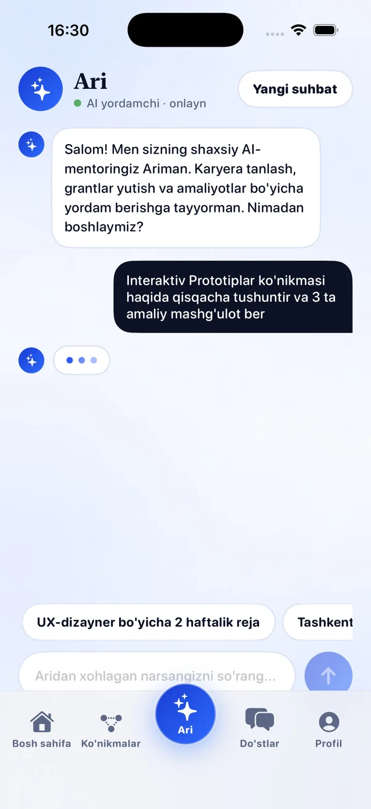
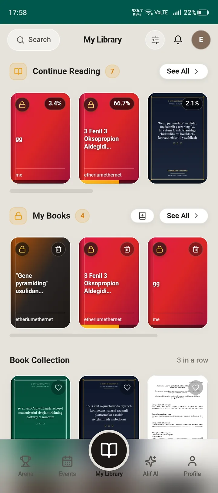
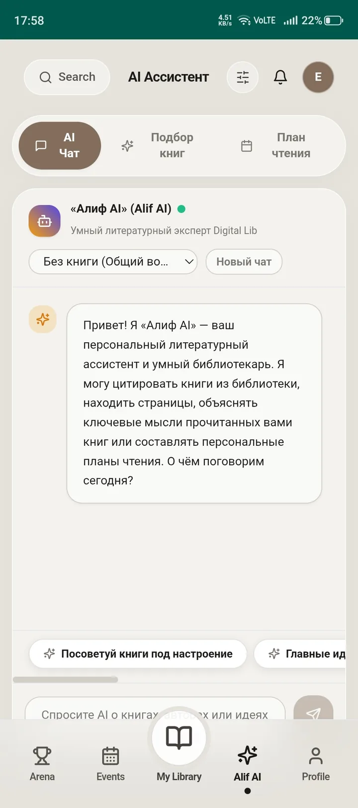
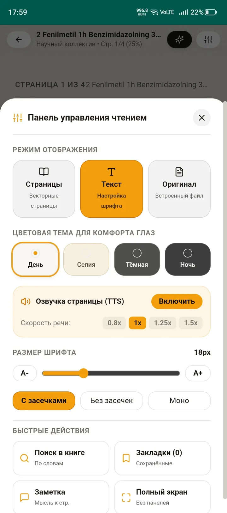
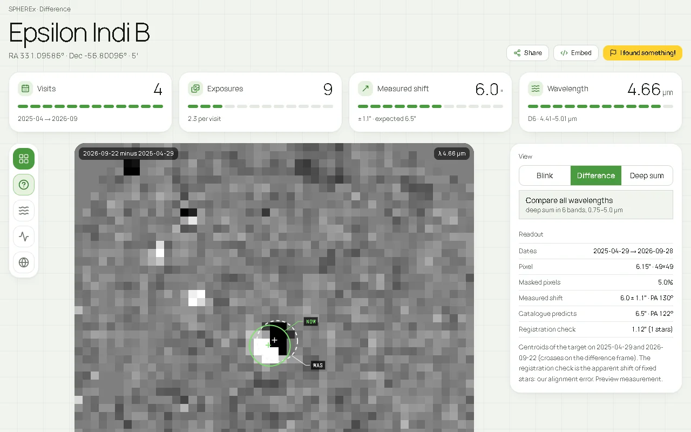

Products we
built.
We started with our own products, tested every decision on real users, and we still run them today. SkyBlink is our NASA Space Apps 2026 project.



Arise
Finds the right career, university and grant for each student.
Students tell Arise what they want to become. Ari, the built-in AI mentor, turns that goal into a plan: which skills to learn, which courses to take and what to do this week.
- Languages
- 3
- Platforms
- 2
- Sign-in options
- 3



IDrok
A personal digital library that works on any phone.
IDrok brings books and academic papers into one app with a comfortable reader. Alif, its AI librarian, finds pages, explains ideas and suggests what to read next.
- Books
- 713
- Quiz questions
- 1,256
- App size, MB
- 7.05


SkyBlink
A free web tool that shows how the sky changes in NASA SPHEREx data.
Type a star name or coordinates. SkyBlink fetches real SPHEREx images from NASA/IPAC IRSA, aligns visits taken months apart and blinks them, the technique that found Pluto in 1930. For the brown dwarf Epsilon Indi B it measured a shift of 6.0 ± 1.1″; the catalogue predicts 6.5″.
- Measured shift, ″
- 6.0
- Error, ± ″
- 1.1
- Catalogue, ″
- 6.5